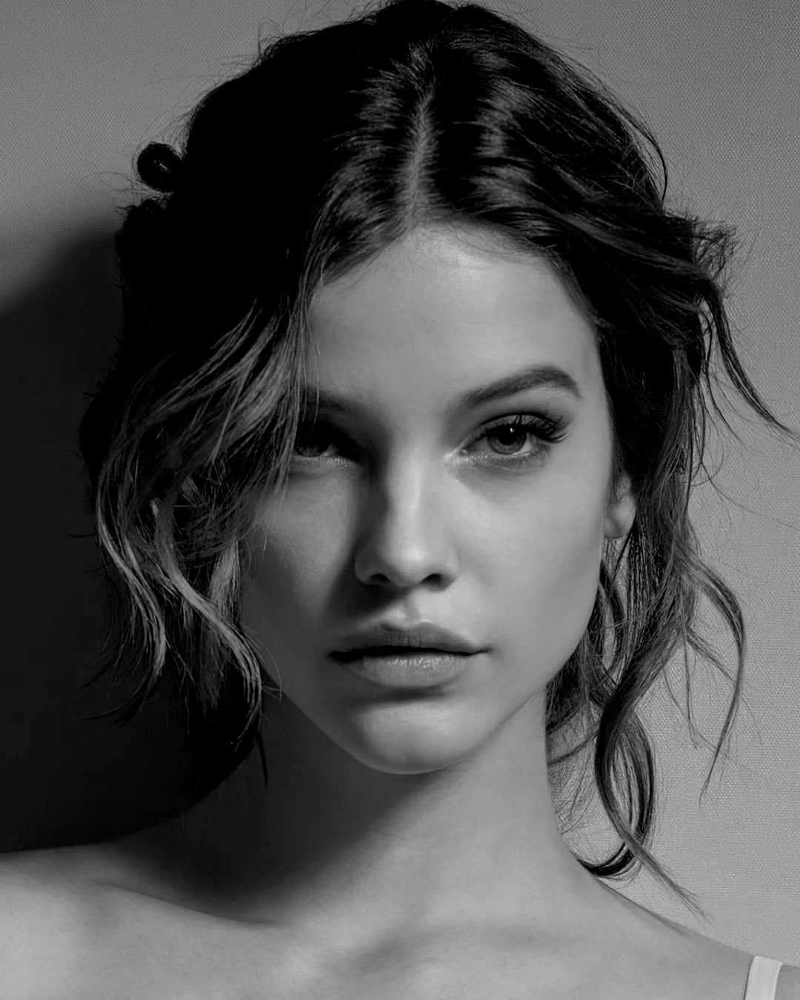
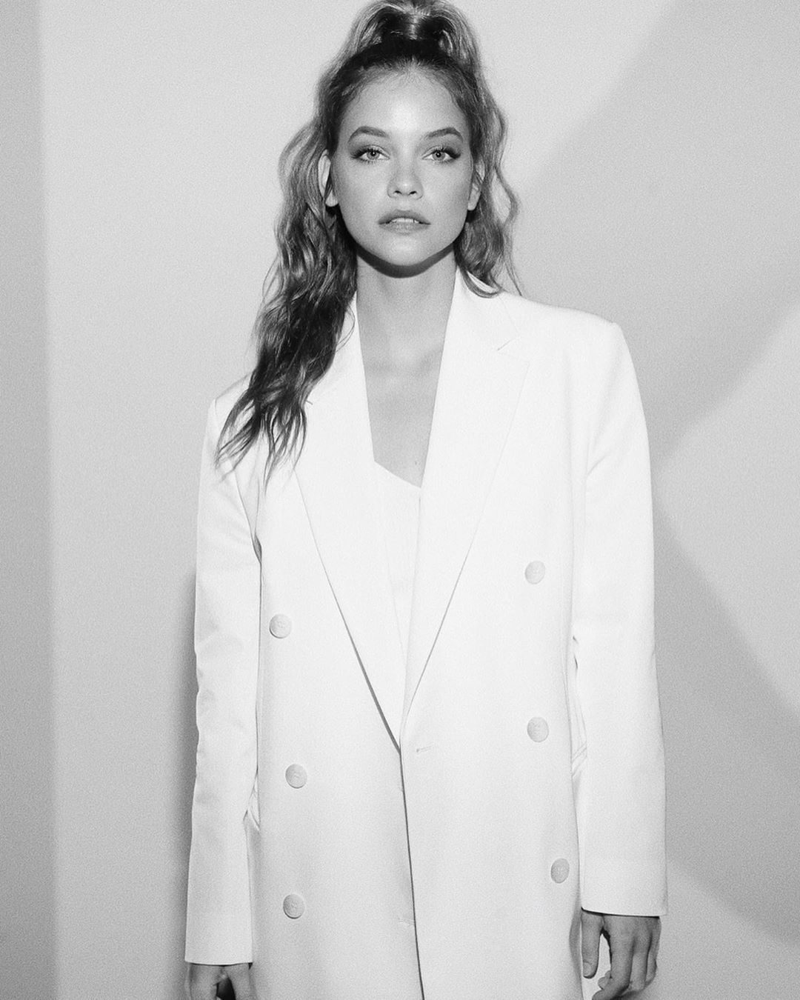

Barbara Palvin không phải là cái tên quá xa lạ đối với sàn diễn của nhà Victoria’s Secret. Trước đây, cô chỉ là người mẫu khách mời và xuất hiện trên sàn diễn chữ V với tần suất khá thưa thớt. Giờ đây, cô đã vinh dự chính thức trở thành “thiên thần” cho hãng nội y đình đám này. Người mẫu Barbara Palvin đã chia sẻ niềm vui này trên trang mạng cá nhân của mình cho toàn thể fan hâm mộ.

Barbara
Cô sải bước lần đầu tiên cho thương hiệu này vào năm 2012. Sau đó, cô tham gia nhiều chiến dịch quảng bá hình ảnh khác. Tháng 11-2018, cô trở lại sàn diễn. Nữ thiên thần nội y chia sẻ: “Khi tôi 13 tuổi, tôi đã xem buổi trình diễn của Victoria’s Secret. Tôi đã tự nhủ: Rồi sẽ có một ngày tôi được xuất hiện ở đó. Ba đến bốn năm sau, tôi được ghi hình lần đầu tiên với thương hiệu này. Bây giờ, tôi cảm thấy như mọi chuyện đã được định sẵn. Victoria’s Secret bắt gặp tôi vào một thời điểm hoàn hảo. Đây là lúc tôi đã hạnh phúc với chính mình và cơ thể của mình”.
Sự nghiệp
Sự nghiệp của Barbara Palvin chỉ thực sự được ghi dấu khi cô tỏa sáng trên tạp chí Vogue Gioiello vào tháng 1 năm 2010. Tiếp theo đó, cô được khoe sắc trên Jalouse, và đặc biệt hơn là trang bìa của L’Officiel. Với tấn số xuất hiện liên tục trên các tạp chí lớn, Barbara Palvin được các "ông lớn" của ngành thời trang thế giới để mắt tới và liên tục mời cô làm người mẫu mở màn cho show của họ. Từ Giles, Pedro Lourenço, Nina Ricci, Louis Vuitton đến Miu Miu... ai cũng mong "giành giật" gương mặt thiên thần này về cho nhãn hàng của họ.
Đối với nghề người mẫu, chiều cao chuẩn mực luôn là một lợi thế nhưng điều này xem ra không ảnh hưởng mấy đến Barbara Palvin trong khi cô chỉ sở hữu một chiều cao vỏn vẹn 1m71. Cô luôn biết lợi thế của mình nằm ở đâu. Đó là một khuôn mặt trong sáng, ánh mắt quyến rũ và bờ môi cong gợi cảm. Và với lợi thế đó, từ cuối năm 2010 đến giữa năm 2011, Barbara Palvin đã "dội bom" hàng loạt các ấn phẩm Vogue của các quốc gia khác nhau: từ Tây Ban Nha, Nga, Đức và hơn cả là tại Pháp. Bên cạnh đó, Barbara còn được chọn làm gương mặt quảng cáo cho dòng nước hoa "Forbidden" của Calvin Klein.
Với nhan sắc của mình, Barbara đã từng được Miranda Almond, Tổng biên tập tạp chí Vogue Anh, nhận xét:"Chúng tôi chọn Barbara bởi cô ấy sở hữu một nét đẹp rất cuốn hút. Nó chính là sự pha trộn giữa vẻ đẹp của Brooke Shields - siêu mẫu kiêm diễn viên người Mỹ - thời trẻ và Natalia Vodianova - siêu mẫu Nga".

Phong cách thời trang của Barbara
Phong cách đời thường của Barbara Palvin hướng đến sự năng động, trẻ trung với áo phông khoác ngoài áo da cá tính.
Cô cũng yêu thích những chiếc hoodie rộng rãi, thỏa mái và kết hợp nó với quần legging.
Có thể thấy, phong cách thời trang của người đẹp biến hóa linh hoạt, không bị mặc định theo hình ảnh của người mẫu nội y.